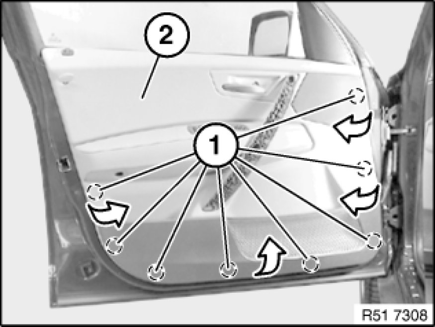

Removing and Installing Left or Right Front Door Trim Panel
51 41 000 - Removing and installing left or right front door trim panel

Special tools required:
- 00 9 317 00 9 317 Trim Panel Wedge

Warning!
Model with side airbag:
Follow safety instructions for working on cars with airbag systems.
Side airbag is mounted on door trim panel:
Disconnect battery Instructions for Disconnecting and Connecting Battery.
Important!
Do not use any sharp-edged tools to remove the panel - risk of damage to airbag.

Lever out airbag emblem (1) and clip (2) with special tool 00 9 317 00 9 317 Trim Panel Wedge and release screw underneath.
Lever out clip (3) and cover on door handle Removing and Installing/Replacing Cover on Door Handle, Front Left or Right(4).
Release screws underneath.
Tightening torque 51 41 1AZ [1][2]Front Door Panel.

Note:
Start by unclipping door trim panel (2) at bottom.
Unclip clips (1) of door trim panel with special tool 00 9 317 00 9 317 Trim Panel Wedge (trim panel wedge).
Carefully unclip door trim panel (1) at top from retainers (2).

Unhook Bowden cable (1) from door lock (2).
Model with side airbag:
Warning!
Disconnect plug connection on side airbag Unlocking/Locking Airbag Plug Connections.
Disconnect remaining plug connections.
Version with speaker:
If necessary, disconnect plug connection (1).
Remove door trim.
Installation Note:
Connect all plugs to original locations.
Installation Note:
Clips (1) are longer than the other clips.
Clips (1) are gray, the other clips are white.
Fit all clips with sealing ring.
If necessary, replace faulty clips.

Installation Note:
After assembling the door trim panel proceed as follows:
- Open door window.
- Lock with vehicle key.
- Check for ease-of-movement on retaining button linkage
- If necessary, align linkages